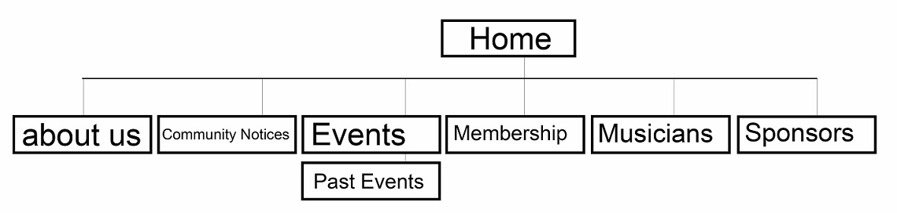

Members: Boopathi Selvaraj, Lara Johnstone, Lachlan Rennick, Micah Kravia, Nicholas Barber
The purpose of this website is to increase the number of volunteers and performers involved with the Townsville Community Music Centre, to increase the involvement of their member base, to promote their concerts and concert organising services and to increase the ticket sales to their concerts.
Seeing a measurable increase in the involvement of volunteers and performers, increased concert attendance and measuring the effectiveness of recruitment using the signup forms online will be the methods used to determine success.
The key demographic for this website is the musically inclined 40+ age group. As the TCMC caters towards a broad range of genres rather than towards a single music genre, the website targets fans of all styles of music and as such will maintain a partial grounding rather than focus on a single style. In order to appeal to this demographic, the website will aim for a more traditional rather than a contemporary design, using elements that are more familiar to the demographic; as such, a newspaper-esque design will be the primary style used throughout the website.
Home
About Us
Community Notices
Events
Past Events
Membership
Musicians
Sponsors

CP1406-CP2010_Group_Project_2015SP1
https://github.com/nbarber1993/CP1406-CP2010_Group_Project_2015SP1.git